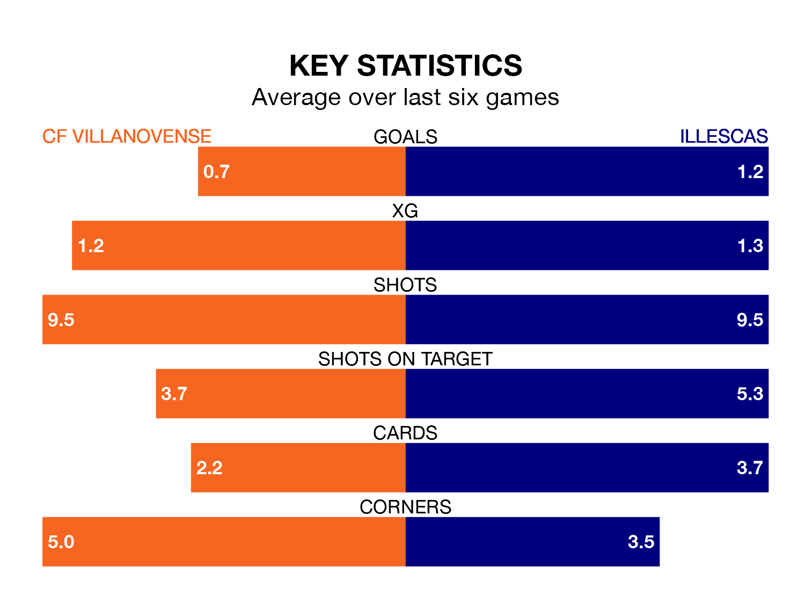

Illescas face CF Villanovense on Sunday seeking to protect their long unbeaten run in the Segunda División RFEF Group 5.
Illescas are unbeaten in five, with three wins and two draws, ahead of the 4pm kick-off.
They face a Villanovense team who have won three and lost two over the same number of games.
Illescas are top of the table after 23 games, of which they have won 11 and drawn seven, earning 40 points.
Villanovense are eight places behind the away team in ninth, with nine wins and five draws putting them on 32 points.
With 29 goals in 23 games so far this season, Illescas are scoring more than average in the league with 1.3 goals per game. And they are conceding fewer than average, letting in 19 goals at a rate of 0.8 per game.
The hosts, meanwhile, are below average scorers, with 1.0 goal per game, compared to a league average of 1.1. They have conceded 0.9 goals per game.
Villanovense's last match was on February 18, a 1-0 win against Atlético Paso, with Israel Cano Sanchez getting the goal for Villanovense.
Illescas beat CDA Navalcarnero 2-0 last time out, also on February 18, with Eduardo Viaña Campuzano and Víctor García Mingo on the scoresheet.
Updated: 10:08 (UTC), 23/02/24